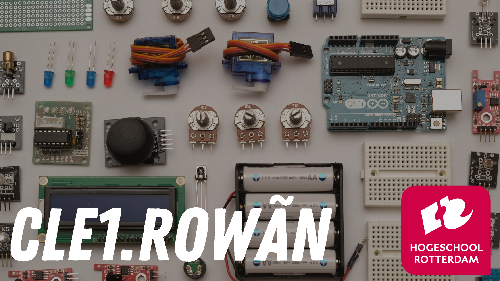

CLE 1
CLE 1 is de periode waar we het gaan hebben over “Internet of things”.
Objecten zoals je koffiezetapparaat, wasmachine, je thermostaat en etc zijn allemaal onderdeel van de Internet of Things. Deze apparaten zijn dus verbonden met wifi om met andere apparaten te communiceren. Neem als voorbeeld je wekker die met je koffiezetapparaat verbonden kan zijn. Dat wanneer jouw wekker gaat, je koffiezetapparaat een bak koffie gaat maken. Op dit soort producten kunnen zich ook sensoren bevinden, dit soort sensoren maken de producten “Smart”. Nu ze zelf informatie vermaken, stel ik me de vraag of het nu niet al in feite kleine robots zijn op zich. En dit is waar we deze CLE periode mee aan de slag gaan. We gaan deze periode vooral aan de slag met de Circuit Playground. De Circuit Playground is een micro computer die je kan programmeren en waarop je sensoren kan aansluiten.
Maar wat is CLE eigenlijk? Contextual Learning Environment is de naam voor het projectonderwijs waar wij vooral aan onze building blocks gaan werken. Daarover later meer. CLE is opgedeeld in 3 sprints, dit is een periode van 2 á 3 weken. In 1 jaar zitten er 4 CLE periodes. Elke CLE periode heeft zijn eigen thema. Internet of Things, Web, Mobile en Gaming. In het vierde jaar van onze opleiding wanneer je wilt afstuderen moet je voldoen aan een aantal eindkwalificaties. In het tweede jaar kan je jezelf al specialiseren in twee van de vijf eindkwalificaties. In het eerste jaar leer de elementen die aan de basis liggen van deze eindkwalificaties. Om dit makkelijk te maken voor iedereen heeft de opleiding “Building Blocks” bedacht. Hieronder zijn de 12 buildings blocks te zien waar we het eerste jaar aan gaan werken. Er zijn dus 12 buildings blocks in het eerste jaar te behalen. Vier CLE periodes die iedere 3 sprints hebben. Er zijn dus 12 sprints, daarom is het ook de bedoeling je elke sprint een building block haalt.
Tijdens CLE 1 gaan we met 3 building blocks aan de slag: Clever, Pitch Perfect en Iron Man. Het belangrijkste block is Iron Man. Bij Iron Man moesten we een product maken. Het is een technisch block en daarom ben je er dan ook al vanaf het begin van de periode mee bezig. Hier later meer over. We beginnen Sprint 1 met het clever building block dat draait om het uitzoeken hoe het project werkt en wie je om hulp kan vragen. Gevolgd door het pitch perfect building block waarin we lieten zien dat je je hebt voorbereid op een presentatie van jouw product en deze ook kan geven. Elke sprint laat je dus een building block zien. De building blocks die eerder zijn genoemd passen ook goed bij het onderwerp van deze CLE.
